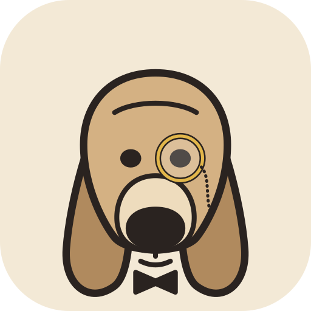

Barkley
Double-tap ⌘.
Type.
Done.
A tiny Liquid Glass launcher for macOS.
Plugins are shell scripts or Rust.
audio
MacBook Pro Speakers
Output · Built-in
Current
AirPods Pro
Not connected
Connect
↩
Studio Display
Output · USB